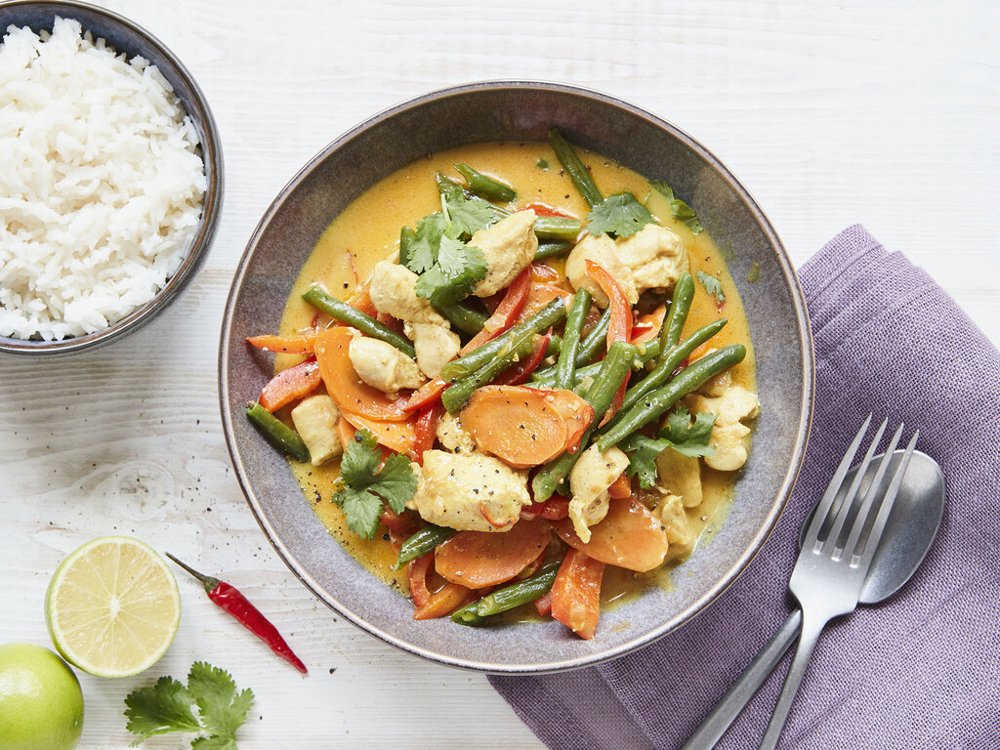

Hähnchen Curry
Schwierigkeitsgrad:
⭐⭐

Zutaten
| 500g |
Hühnchenbrust |
| 200ml |
Weißwein |
| 300ml |
Kokosmilch |
| 1 |
Limone |
| 1 |
Ingwerknolle |
| Etwas |
Curry-Puder |
| Nach belieben |
Grüne Paprika |
| 1 EL |
Senf |
| 1 EL |
Senf |
|
Fett zum Braten |
Zubereitung:
-
Hähnchen putzen und würfeln, Zwiebeln schälen und fein würfeln, Paprika würfeln.
- Hühnchenbrust in einer beschichteten Pfanne mit Butterschmalz kräftig anbraten. Zwiebelwürfel dazugeben und mit ca. 2 TL braunem Zucker mit karamellisieren lassen. Mit 1 gestrichener EL Mehl und Curry-Puder abstauben, kurz mit
rösten. Mit Weißwein ablöschen und zur Hälfte einreduzieren lassen. Auffüllen mit Kokosmilch.
- Zesten und Saft einer Limette zugeben und auf geringer Hitze köcheln lassen. Ingwer schälen und fein würfeln und mit ins Curry geben. Paprika und Gemüse dazugeben und ca. 5 Minuten Köcheln lassen. Mit einem TL Sesamöl, Salz, Pfeffer
abschmecken. Etwas Kurkuma dazugeben für eine kräftigere Farbe. Gehakte Zitronenmelisse zum Schluss mit ziehen lassen.